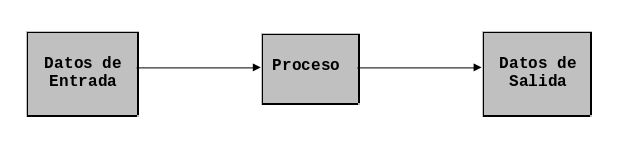

Conceptos Básicos y Metodología
En este capítulo aprenderás los conceptos básicos necesarios para escribir tus primeros programas:
- Flujo de trabajo de una Computadora
- Programa
- Algoritmo
- Lenguajes algorítmicos
- Lenguaje de programación
- Metodología para crear programas.
Flujo de trabajo de una computadora
Con una computadora puedes diseñar soluciones para problemas específicos, sobre todo si estos problemas involucran operaciones complejas o repetitivas, o manejan un volumen muy grande de datos.
A los datos que recibe la computadora, se les llama entradas, estos datos se procesan para producir una salida.

Programa
Un programa es una secuencia de operaciones ejecutadas por una computadora sobre un grupo específico de datos de entrada usados para obtener una resultado.
A la secuencia de operaciones que contiene un programa se le llama algoritmo.
Algoritmo
Un algoritmo es una serie de pasos organizados que describen el proceso que se debe seguir para dar solución a un problema específico.
Los algoritmos se clasifican en:
- Algoritmos cualitativos. Son aquellos en los que se describen los pasos utilizando palabras.
- Algoritmos cuantitativos. Son aquellos en los que se utilizan cálculos numéricos para definir los pasos del proceso.
Supon, por ejemplo, que deseas escribir un algoritmo para sumar dos números. Si usas un algoritmo cualitativo, sólo palabras, los pasos son similares a los siguientes:
- Preguntar cuales son esos dos números.
- Sumar los dos números obtenidos en el paso 1.
- Comunicar el resultado obtenido en el paso 2.
Por otro lado, si usas un algoritmo cualitativo tendrías que usar fórmulas como las siguientes:
- Sean
AyBdos variables con los valores que queremos sumar. - Sea
C = A + B. - El resultado de la suma es
C.
Lenguajes Algorítmicos
Un lenguaje algorítmico es un conjunto de símbolos y reglas que se utilizan para describir de manera explícita un proceso. Los lenguajes algorítmicos se clasifican en dos tipos:
-
Lenguajes gráficos. Este tipo de lenguajes representan gráficamente las operaciones que realiza un algoritmo (diagrama de flujo).
- Lenguajes no gráficos. Estos lenguajes expresan en forma descriptiva las operaciones que debe realizar un algoritmo (pseudocódigo).
Ambos lenguajes se analizan a detalle en el Capítulo 3.
Lenguaje de programación
Los algoritmos no pueden ser interpretados por una computadora directamente, así que debemos traducirlos a un lenguaje que la computadora pueda entender. Ese es el objetivo de un lenguaje de programación.
Un lenguaje de programación es el conjunto de símbolos, caracteres y reglas que le permiten a las personas comunicarse con la computadora. Los lenguajes de programación tienen un conjunto de instrucciones que permiten realizar operaciones de:
- entrada/salida,
- aritméticas,
- de manipulación de texto,
- lógica y comparación y
- almacenamiento y recuperación de datos.
Metodología para la creación de programas.
Una metodología define una manera sistemática de hacer algo. En nuestro caso, describe los pasos a seguir al crear programas.
1) Definición del Problema
El primer paso consiste en comprender de qué trata el problema y especificarlo lo más formalmente posible con el propósito de eliminar la ambigüedad, la inconsistencia y la incompletitud.
- Ejemplo de ambigüedad. La frase "Mira al hombre en el patio con un telescopio" se presta a ambigüedad. ¿Utilizamos un telescopio para mirar al hombre en el patio? o ¿el hombre que miramos tiene un telescopio?
-
Ejemplo de inconsistencia. En ocasiones, el enunciado que describe el problema que se quiere resolver puede incurrir en contradicciones. Piensa en las reglas de un procesador de palabras:
- Todas las líneas de texto tienen la misma longitud indicada por el usuario.
- Un cambio de línea debe ocurrir solo después de una palabra, a menos que el usuario pida explícitamente la división por sílabas.
La inconsistencia resulta al preguntarse ¿Qué pasa cuando la palabra es más larga que la línea? Si el usuario no pide explícitamente la división por sílabas, esta línea tendrá mayor longitud.
- Ejemplo de incompletitud Por incompletitud se entiende que no todos los casos o conceptos están bien definidos. En un manual de un procesador de palabras se encuentra la frase "Seleccionar es el proceso de designar las áreas de su documento sobre las cuales desea trabajar" ¿qué significa designar? ¿Qué significa área? ¿Cómo deben ser las áreas? ¿Es una sola área?
Todo problema debe tener una representación en la cual todos los elementos que intervienen sean representados, idealmente, sin redundancia, sin ambigüedad y sin inconsistencias.
2) Análisis del Problema
Una vez que haz comprendido lo que deseas que la computadora haga, necesitas definir:
- Los datos de entrada.
- Cuál es la información que se desea producir (salida).
- Los métodos y fórmulas que se necesitan para procesar los datos.
Una recomendación muy práctica consiste en ponerte en el lugar de la computadora y analizar qué es lo que es necesario que le ordenes y en que secuencia, para producir los resultados esperados.
3) Diseño del Algoritmo
Las características de un buen algoritmo son:
- Debe tener un punto particular de inicio.
- Debe soportar la mayoría de las variantes que se puedan presentar en la definición del problema.
- Debe ser finito en tamaño y tiempo de ejecución.
4) Codificación
La codificación es la operación de escribir la solución del problema (algoritmo) en un un lenguaje de programación, a lo cual se le conoce como código fuente.
5) Prueba y Depuración
Los errores humanos dentro de la programación de computadoras son muchos y aumentan considerablemente con la complejidad del problema. Al proceso de identificar y eliminar errores se le llama depuración.
Ejercicios Propuestos
- Explica el flujo de trabajo de una computadora.
- ¿Qué es un programa?
- ¿Qué es un lenguaje de programación?
- ¿Qué es un algoritmo y cuál es su clasificación?
- ¿Qué son los lenguajes algorítmicos y cómo se clasifican?
- Describe de manera cualitativa y cuantitativa un algoritmo que calcule el promedio de 3 números.
- ¿Cuáles son los 5 pasos de la metodología descrita en este Capítulo?
- Dé un ejemplo de ambigüedad, otro de inconsistencia y uno más de incompletitud.